Competitive exams, reimagined
Mockups of how Accademy could simplify the competitive-exam year for students and teachers. Each board shows how a stage works today next to a reimagined version. JEE Main is the running example; the same stages fit NEET, CUET, CA and banking exams. All names and numbers are sample data.
Students
Six stages of an aspirant's year. Stage 4, exam day, is run by the exam body and has no board yet.
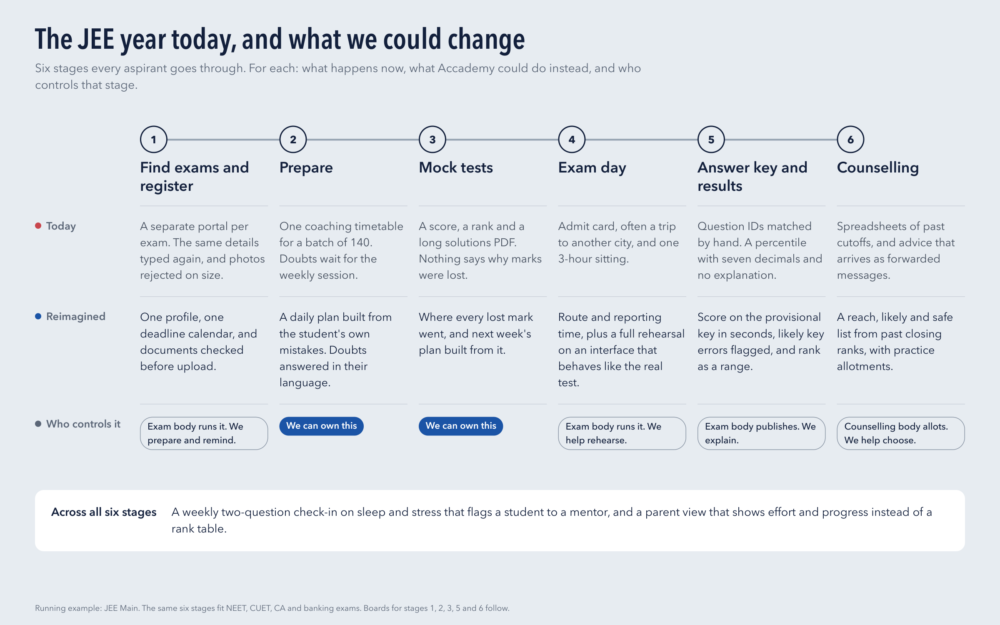
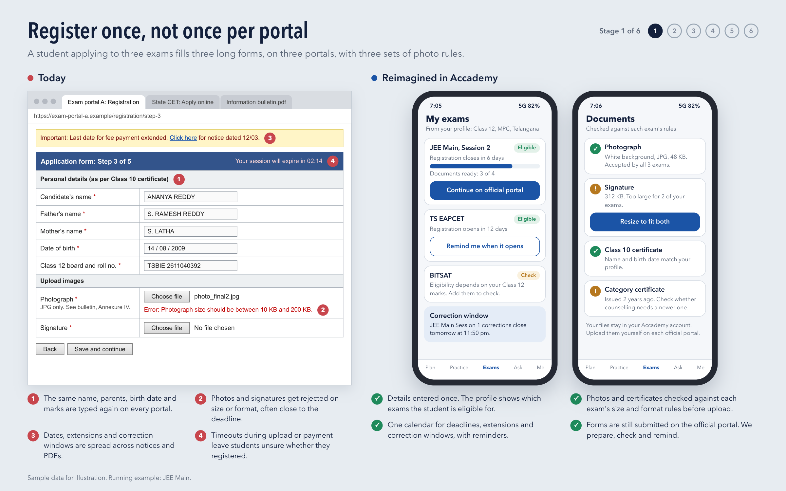
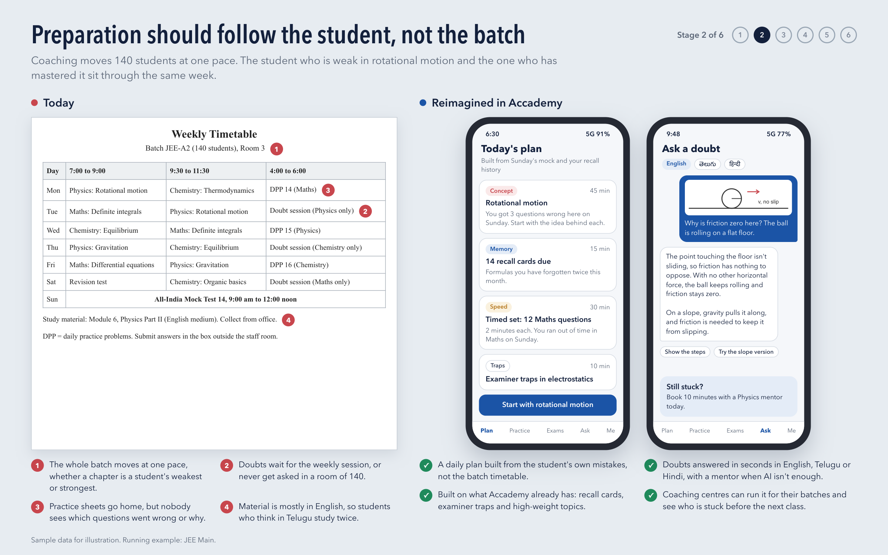
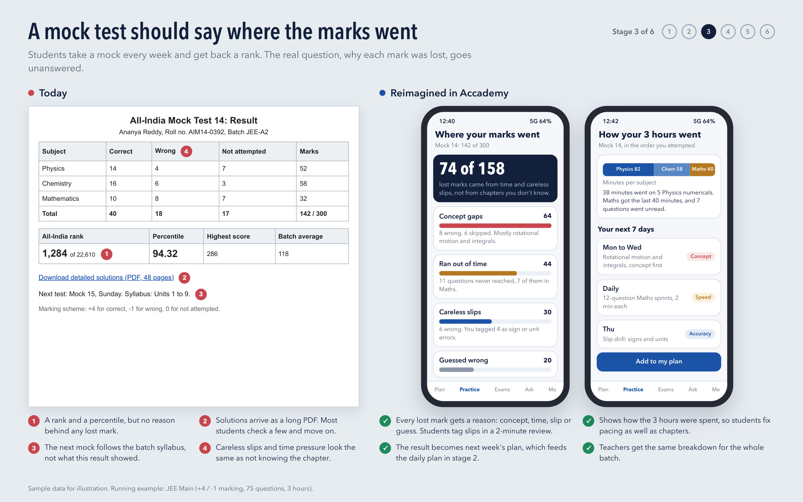
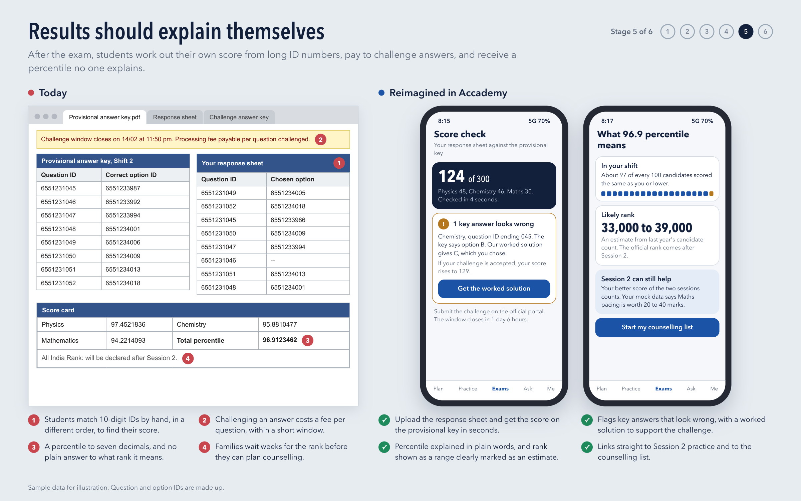
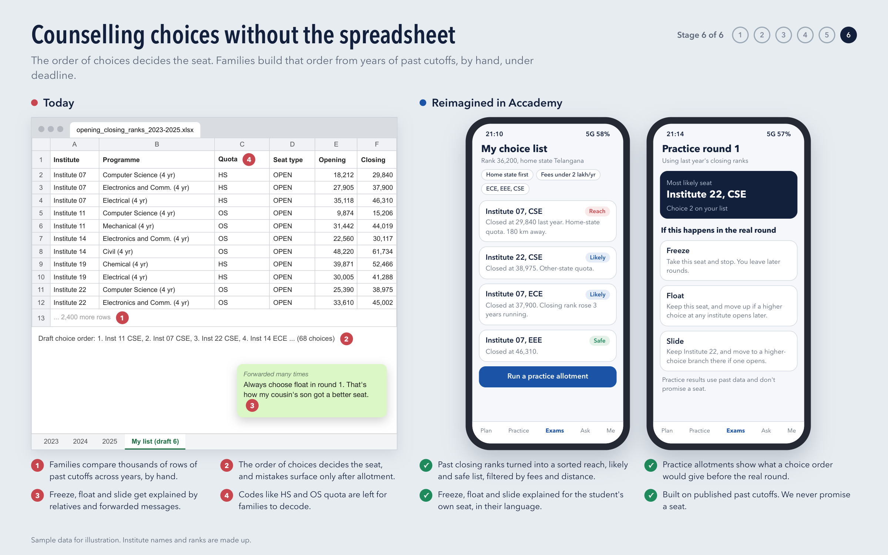
Teachers
The four steps a coaching teacher repeats every week. Teachers see only their own subject.
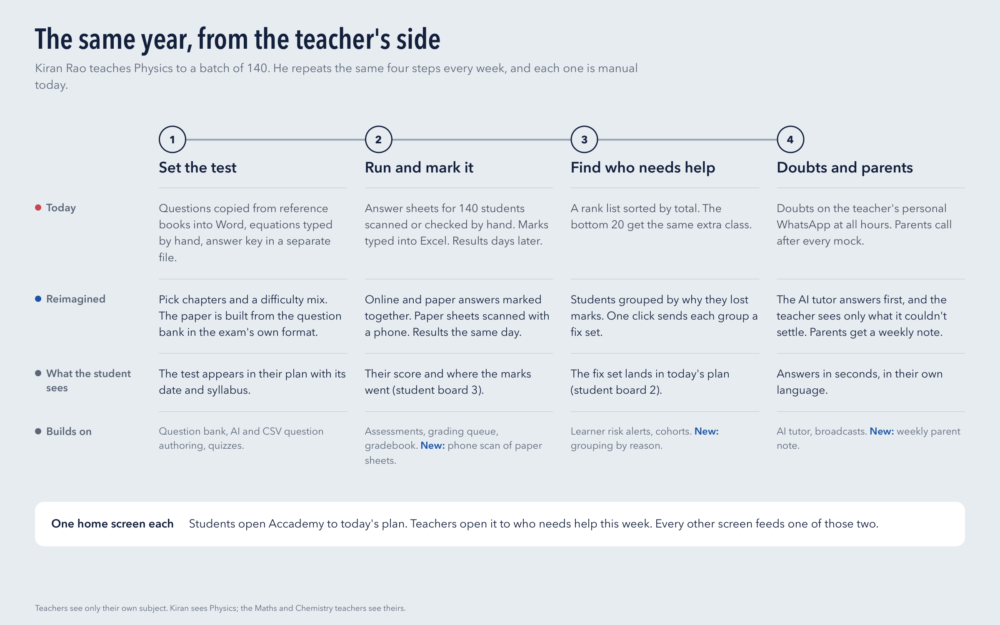
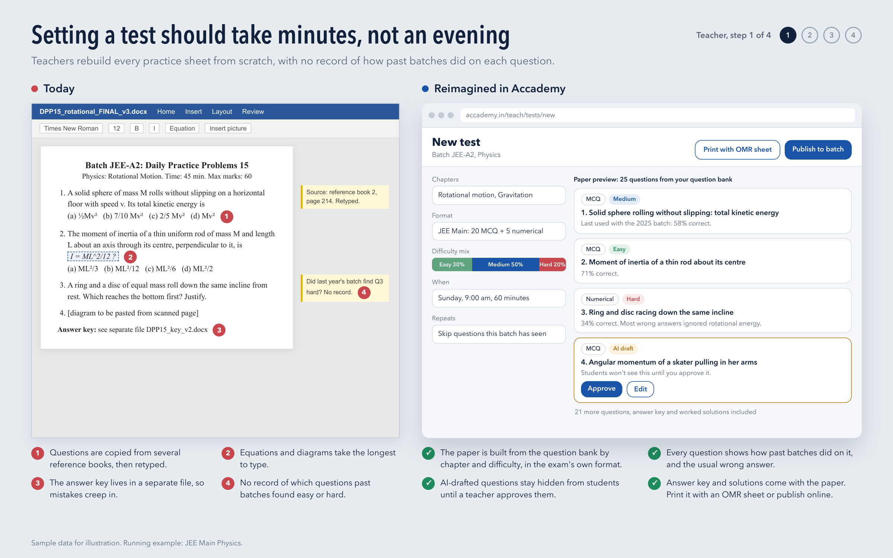
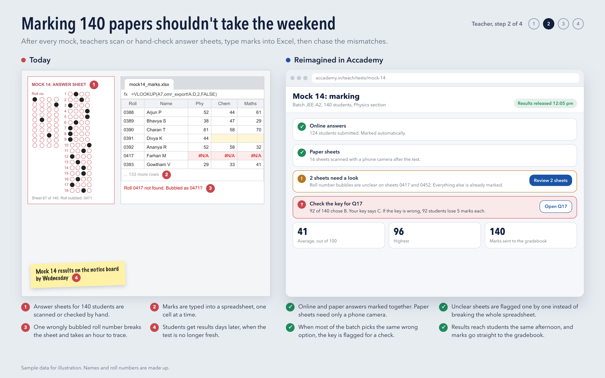
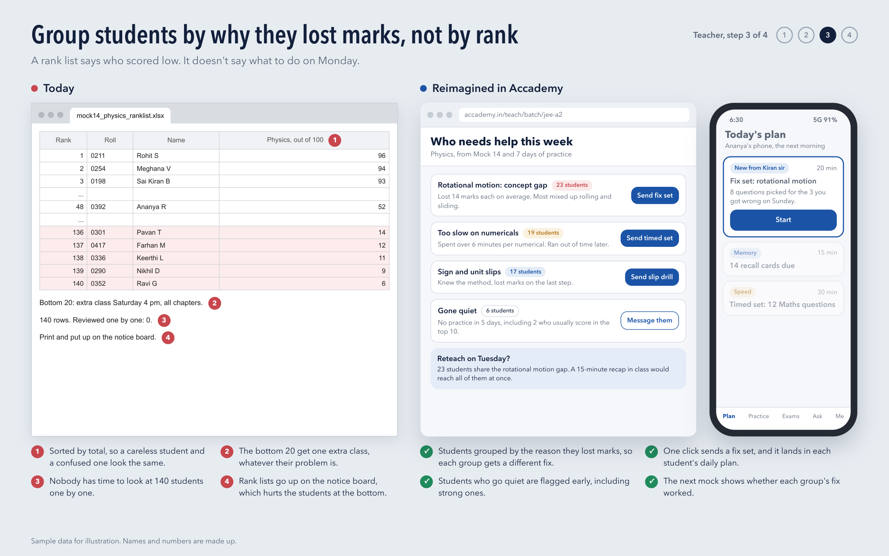
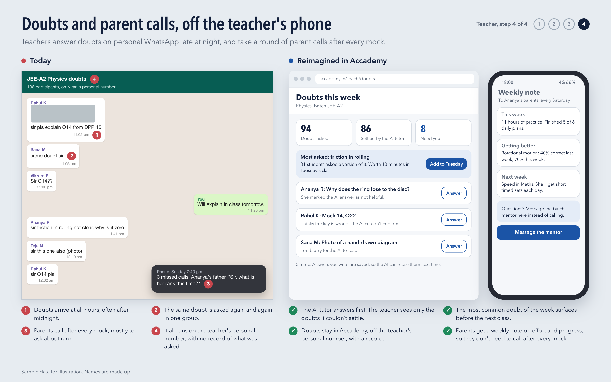